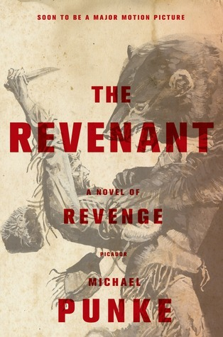

"The Revenant"
- Read on 2019-12-24
- Rating: ️️️️️
- Format: 🎧 (9 hours 12 minutes)
I was hooked on this story. It's written about a time period I enjoy (early-to-mid 1800's), and a subject I enjoy (trappers/frontiersmen). Sometimes I enjoy reading books about revenge, mainly when it's deserved (which I acknowledge is out of whack with my religious beliefs on the topic). Regardless, I enjoyed the book, and also the elements that end up being explained as being rooted in truth. Hugh Glass sounds like an amazingly skilled individual. No clue how well the movie ties to this book.
Minus a star because it didn't turn out like I hoped.
- Prior: Norse Mythology
- Next: Spies of No Country